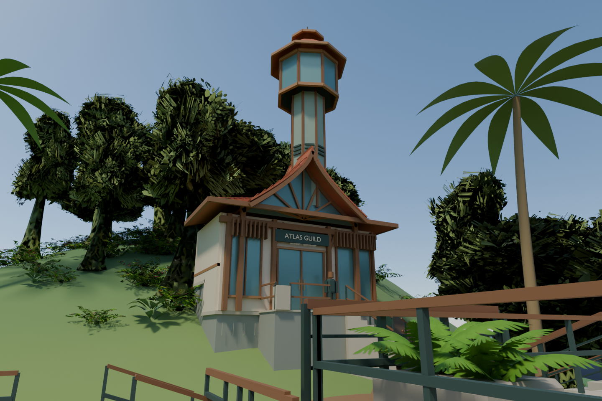
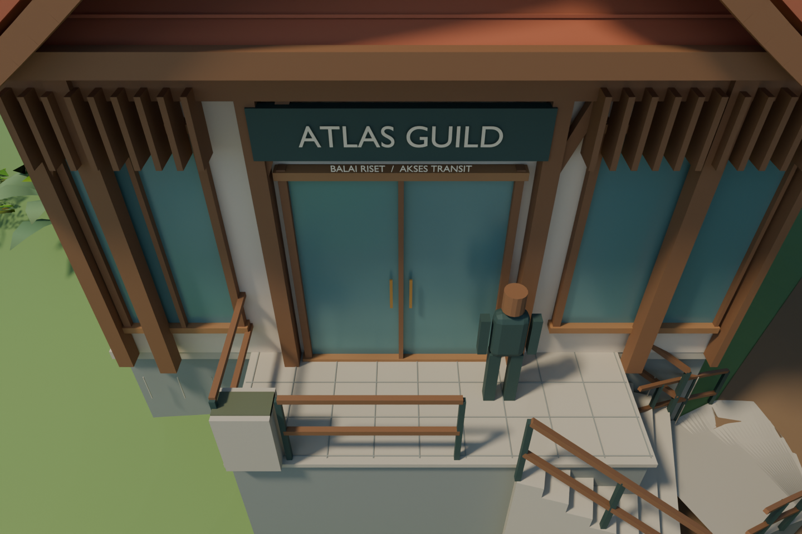
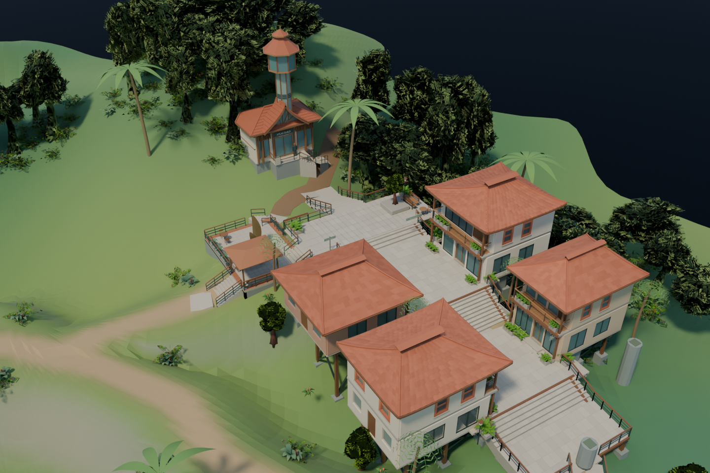
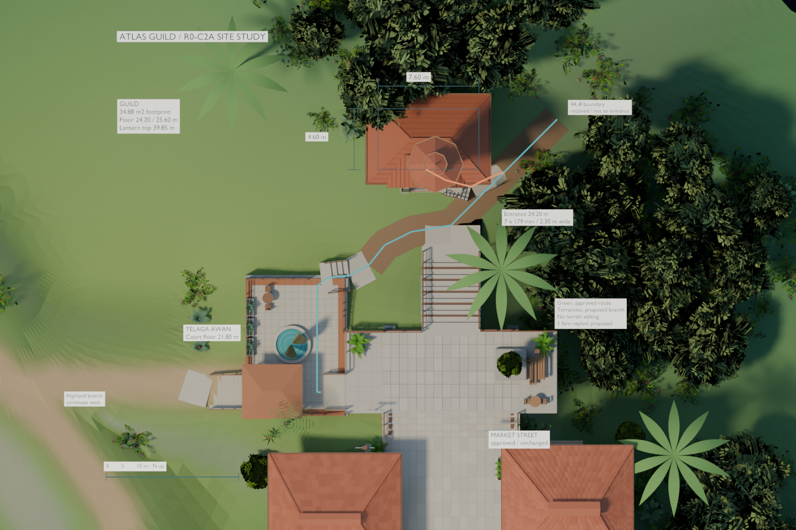

Atlas Guild · R0-C2A
One isolated site and architectural concept. Human visual approval is pending. Production remains unchanged; no GLB export or new-route controller test was performed.
Measured feasibility report · Source record · Native Blender project
Actual Blender MCP renders, 1440 × 960. Structural footprint 34.88 m²; floor elevations 24.20 / 25.60 m; maximum support exposure 2.40 m. The proposed 6.40 m branch has seven 179 mm risers and a steep 34.5% stone approach. Gameplay and browser appearance remain unverified.
Guild from Telaga Awan · 1.65 m above the court

Actual scene geometry · owner review pendingElevated entrance and forecourt inspection

Actual scene geometry · owner review pendingGuild in relation to the preserved town

Actual scene geometry · owner review pendingMeasured site plan · 60 m width, north up

Actual scene geometry · owner review pending